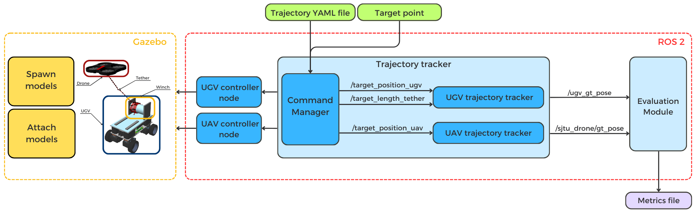
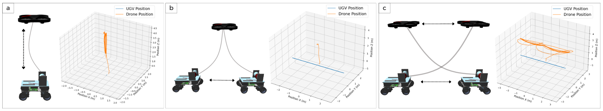
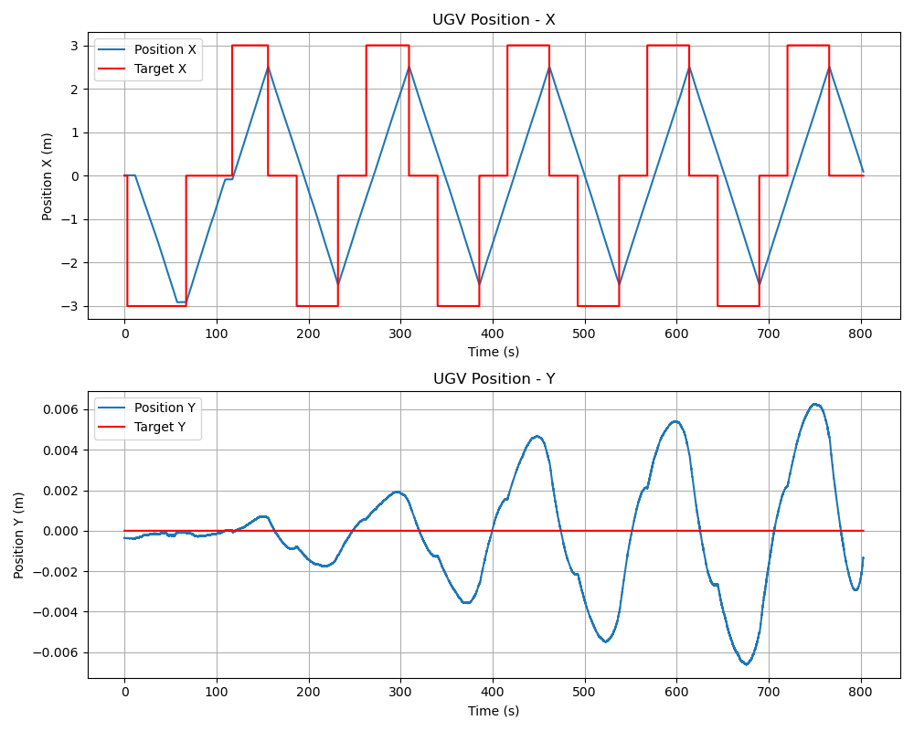
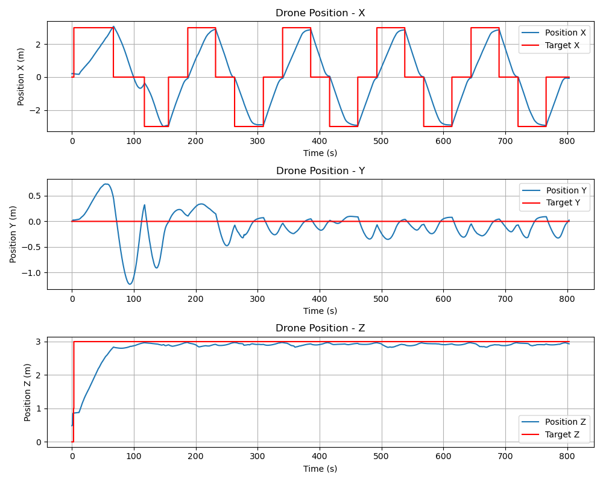
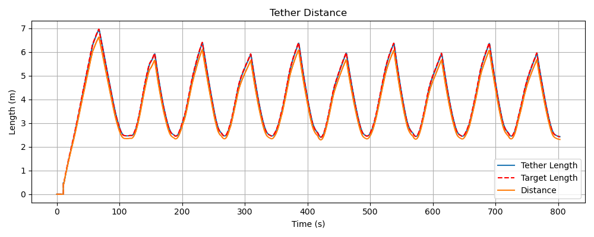
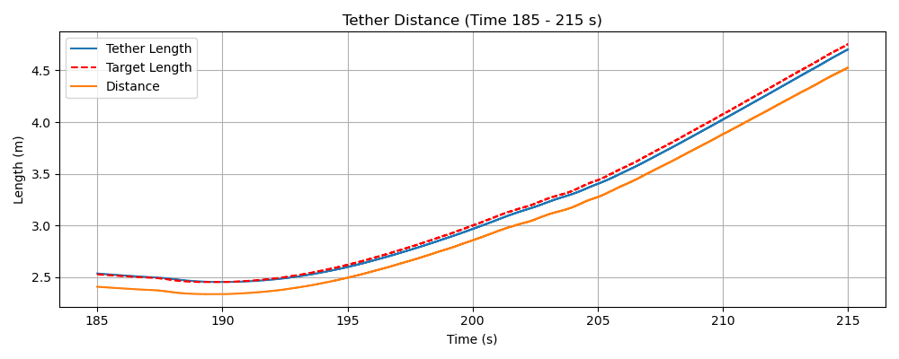
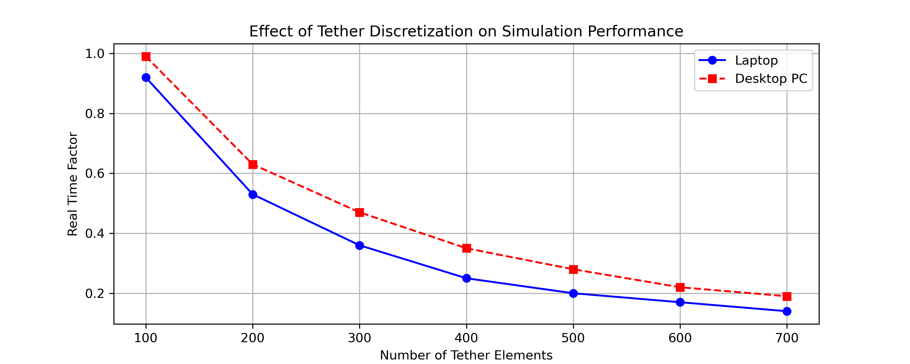

Physical Simulation of Marsupial UAV-UGV Systems
Connected by a Variable-Length
Hanging Tether
This work presents a simulation framework that models the dynamics of a hanging tether with adjustable length connecting a UAV to a UGV, incorporating the interaction between both robots and a winch. Extensive experiments, including comparisons with real-world deployments, show that the simulation closely reproduces the complex tether dynamics — particularly in constrained environments — providing a validated tool for studying tethered robotic systems.
The marsupial UAV-UGV simulator is built on ROS 2 Humble and Gazebo, integrating multiple core components to simulate tethered robot behavior. It supports both manual and autonomous operation, and is modular and easily customizable, allowing modifications to the UAV, UGV, and tether models.

Gazebo spawns the UGV, the UAV on its landing platform, and a tether coiled around the winch. The tether is attached to both robots and ROS 2 modules manage the system's operation.
Missions are specified via YAML waypoint files with reference tether lengths, or via real-time ROS messages. Custom trajectory-tracking algorithms and control modules are supported.
Each robot has a dedicated controller that executes the assigned movements. The UGV controller also drives the winch, adjusting the tether length to maintain the proper slack.
An evaluation module collects ROS 2 topic data — robot poses and tether length variations — and compiles metrics on trajectory accuracy, tether behavior, and system stability.
Quadrotor with ROS 2-compatible position and velocity control, taking off from and landing on the platform mounted on the UGV.
Holonomic ground vehicle with an integrated winch that dynamically releases and retracts the tether during operation.
Flexible, multi-segmented tether with dynamic length adjustment. Length, mass, stiffness and damping are fully configurable via a Jinja template.
| Parameter | Value | Units |
|---|---|---|
| Common Parameters | ||
| Radius of each section | 0.004 | m |
| Radius of the joint | 0.009 | m |
| Mass of each section | 0.01 | kg |
| Damping | 0.05 | Ns/m |
| Spring stiffness | 0.01 | N/m |
| Coiled Tether | ||
| Number of elements | 125 | – |
| Element length | 0.15 | m |
| Helix radius | 0.14 | m |
| Uncoiled Tether | ||
| Number of elements | 10 | – |
| Element length | 0.05 | m |
To validate the simulated tether against a real catenary, the UAV and UGV were placed 5, 10 and 15 meters apart with 20% tether slack, and the tether was simulated with four different element lengths. The averaged error between the simulated tether elements and the theoretical catenary curve remains below 1% of the tether length in all cases.
| Element Length (m) | err5 ↓ (%) | err10 ↓ (%) | err15 ↓ (%) | Mean ↓ (%) |
|---|---|---|---|---|
| 0.05 | 0.942 | 0.268 | 0.269 | 0.493 |
| 0.10 | 0.332 | 0.214 | 0.232 | 0.259 |
| 0.15 | 0.675 | 0.323 | 0.292 | 0.430 |
| 0.20 | 1.600 | 0.490 | 0.552 | 0.881 |
Beyond the catenary comparison, the tether interacts with the environment through Gazebo's physics engine: it collides with obstacles, wraps around structures, and adjusts its tension in response, affecting both the UAV's stability and the UGV's traction.
Three predefined scenarios evaluate the fundamental functioning of the framework and the dynamics of the UAV and UGV when following predefined trajectories, each repeated ten times.

The UGV remains stationary while the UAV performs ten consecutive ascents and descents, evaluating the winch's ability to smoothly release and retract the tether.
The UAV hovers at a fixed altitude while the UGV moves back and forth between two points, testing tether slack management during horizontal displacement.
UAV and UGV move simultaneously in opposite directions, challenging the coordination mechanisms and the winch's dynamic tether-length adjustment.
| Scenario | Time (s) | Targets | Dist. UAV (m) | Dist. UGV (m) | Tether Rel. (m) | Tether Col. (m) |
|---|---|---|---|---|---|---|
| 1 | 504 | 20 | 45.50 | 0.25 | 23.64 | 22.08 |
| 2 | 765 | 20 | 6.99 | 49.99 | 14.09 | 11.65 |
| 3 | 803 | 20 | 65.21 | 50.88 | 40.11 | 37.68 |
Detailed results for Scenario 3 (Opposite Direction Coordination): robot positions with respect to their references, and tether length adjustments performed by the winch.




The winch keeps the tether length 5% greater than the UAV-UGV distance, maintaining a slight slack. Despite the dynamic forces introduced by the tether, the UAV successfully reached all predefined target points, demonstrating the robustness of the control algorithms and the tether management system.
Computational performance was evaluated on a laptop (Intel i7-13620H, 32 GB RAM, RTX 4060) and a desktop PC (Intel i9-12900F, 64 GB RAM, RTX 3060), averaging 10 runs per configuration. The number of tether elements directly drives the computational load: the desktop maintains a real-time factor from 0.99 (100 elements) down to 0.19 (700 elements), showing that the simulator runs on mid-tier hardware while benefiting from higher-end systems for demanding configurations.

Side-by-side comparison with real-world experiments, and a closer look at tether-obstacle collisions.
If you use this simulator in your research, please consider citing our IEEE RA-P paper:
@article{maese2026marsupial,
author = {Maese, Jose E. and Caballero, Fernando and Merino, Luis},
title = {{Physical Simulation of Marsupial {UAV}-{UGV} Systems Connected by a Variable-Length Hanging Tether}},
journal = {IEEE Robotics and Automation Practice},
year = {2026}
}